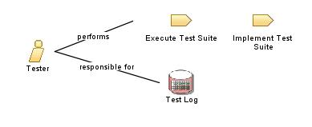

| Role: Tester |
 |
|
 |
||
| Modifies |
|
|
|---|---|---|
| Process Usage | ||
|
Roles organize the responsibility for performing tasks and developing work products into logical groups. Each role can be assigned to one or more people, and each person can fill one or more roles. When staffing the Tester role, you need to consider both the skills required for the role and the different approaches you can take to assigning staff to the role. We recommend reading Kaner, Bach & Pettichord's Lessons Learned in Software Testing [KAN01], which contains an excellent collection of important concerns for test teams. Of special interest to the Tester role are the chapters on The Role of the test group and Thinking like a tester and Bug advocacy. |
| Skills |
The knowledge and skill sets may vary depending on the types of tests being executed and the phases of the project lifecycle, however in general, staff filling the Tester role should have the following skills:
Where automated testing is required, these skills should be considered in addition to those already noted above:
This role is primarily responsible for:
|
|---|---|
| Assignment Approaches |
The Tester role can be assigned in the following ways:
Note also that specific skill requirements vary depending on the type of testing being conducted. For example, the skills needed to successfully utilize system load testing automation tools are different from those needed for the automation of system functional testing. |
© Copyright IBM Corp. 1987, 2006. All Rights Reserved. |